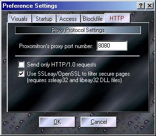

Here is where several of the Proxomitron's global settings can be changed. Click a tab and area for an explanation of its function.

The "HTTP" Tab
This allows you to control some of Proxomitron's network settings.
Proxomitron's proxy port is the number Proxomitron uses to "listen" for connections from your browser. You can change this from the default of 8080 if you like (or need to because some other program is using the same port), but Proxomitron must be restarted for this to take effect. If you do, be sure to also change your browser's proxy setting to match the new port.
Enabling SSL Filtering
If you want to use the SSLeay .DLL files to filter Secure (https://) pages, you need to check the box here after adding the .dll files to Proxomitron's program folder.
However, Use this with caution! If the SSL is being used for something sensitive (like on-line banking or credit card purchases) you're probably better off not filtering the connection.
Also this option is only available after you place the ssleay32.dll and libeay32.dll files in Proxomitron's program folder. Because of the laws regarding exporting cryptography from the US, Proxomitron does not include these .DLL files. However with some luck you may find them as part of other packages.
 Return to main index
Return to main index